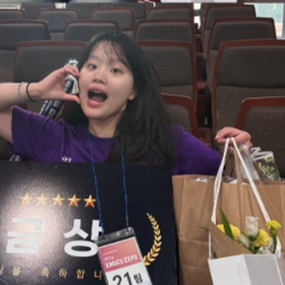
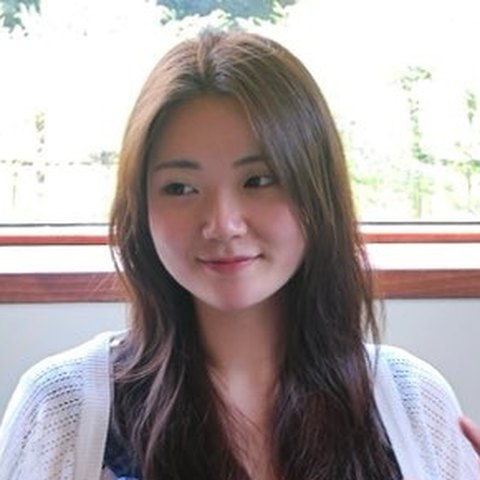

KCC 공지 캡처
아이폰에서 찍어 iCloud로 맥에 들어온 캡처. 어느 프로젝트 자료인지 확인한 뒤 이름을 붙여 저장한다.
맥락 확인다운로드, 맥 스크린샷, iCloud로 들어온 아이폰 캡처까지.
모아가 내용을 읽고 이름을 붙여, 알맞은 폴더에 정리해요.
헷갈리면 모아서 물어보고, 알려준 기준을 배워요.

이은진 팀장AI빅데이터융합경영학과
최연우기계공학부 모아 · KCC 캡스톤 프로젝트
모아 · KCC 캡스톤 프로젝트문제에서 실제 시연과 검증 결과까지 한 흐름으로 보여드립니다.
모아 · KCC 캡스톤 프로젝트
모델은 계획을 제안하고, 파일 변경은 승인 뒤 실행기가 맡습니다. 답변·승인은 다시 규칙으로 학습됩니다.
사용자별 기기·폴더·파일·분류 질문을 관계형 데이터로 관리합니다.

Mac 상태는 JSON 스냅샷으로, 파일 작업은 명령 큐와 결과로 저장합니다.

수집 평가 27건에서 ToolHost가 받아들인 호출 비율


허용 가능한 도구 호출
반복 호출 37회 → 0회
대시보드대기 항목 보기 ↗화면은 데모 기능 구조를 요약한 예시입니다.

분류가 모호하면 근거를 보여주고 사용자가 고릅니다. 시연에서는 현재 구현에서 실제로 작동하는 단계만 실행합니다.

처음 한 번 답하면, 같은 페이지 다운로드는 다음부터 바로 정리됩니다.

휴지통을 비우기 전까지는 원래 자리로 되돌릴 수 있습니다.
원래 쓰던 폴더 그대로새 정리 구조 없이 기존 폴더에 바로 적용
온디바이스 · 로컬 LLMQwen3-1.7B가 맥에서 실행, API 비용 0원, 파일이 밖으로 안 나감
더 큰 모델로 확장 가능서버가 있으면 모델만 바꿔 성능을 높이는 구조
애플 연동아이폰 캡처가 iCloud로 맥까지 바로
캘린더 자동 저장일정·공지를 캡처하면 Google 캘린더에 알아서 등록
더 많은 폴더도 정확하게LLM 최적화와 학습으로 프로젝트가 많아도 잘 분류
중복 · 비슷한 파일 정리같은 자료의 여러 버전을 찾아 하나로 묶기
Windows · 다른 클라우드Mac 밖으로 지원 범위와 저장소 연결 확대
다시 정리하고 찾는 일을 줄이는 것, 그게 모아의 목표입니다.모아 · KCC 캡스톤 프로젝트